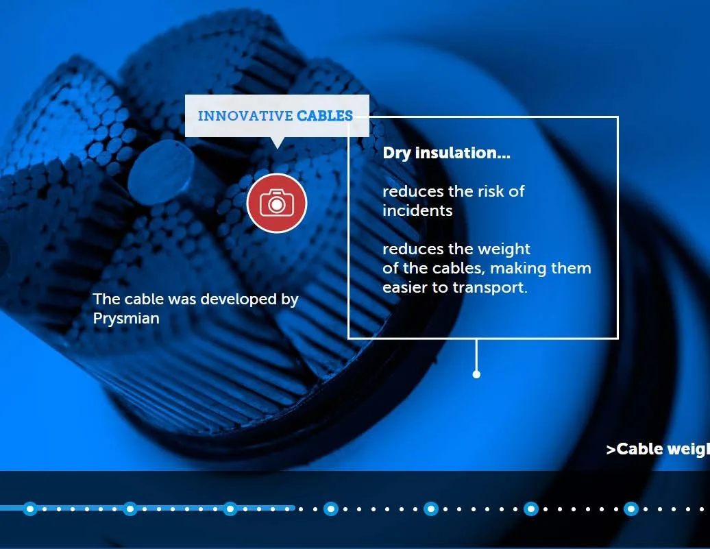

Marketing y comunicación
Interconexión eléctrica Francia–España
INELFE · Visita virtual · 2015
Mi aportación. Dirección de Optimus · comunicación digital

01
Contexto
La puesta en marcha de una infraestructura de interconexión eléctrica entre Francia y España.
02
Necesidad
Explicar el proyecto de ingeniería y sus distintos componentes en un recorrido digital.
03
Estrategia
Desde Optimus desarrollamos una visita virtual con vídeos, imágenes, panorámicas y diagramas. Mi aportación se vincula a la dirección de la empresa y la coordinación del trabajo entre contenidos, diseño y desarrollo.
04
Impacto
Se realizó la visita virtual descrita en el dosier. El caso muestra la aplicación de recursos digitales a la comunicación de una infraestructura; no se publican métricas de uso no documentadas.

Créditos y alcance
Cliente: INELFE, consorcio de REE y RTE. Diseño y realización: Optimus Medina Riley.
¿Qué tienes entre manos?
Podemos empezar por una necesidad concreta o por una idea que aún necesita forma.